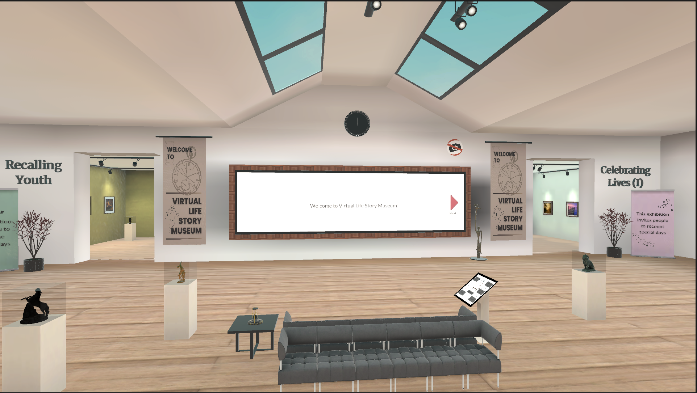
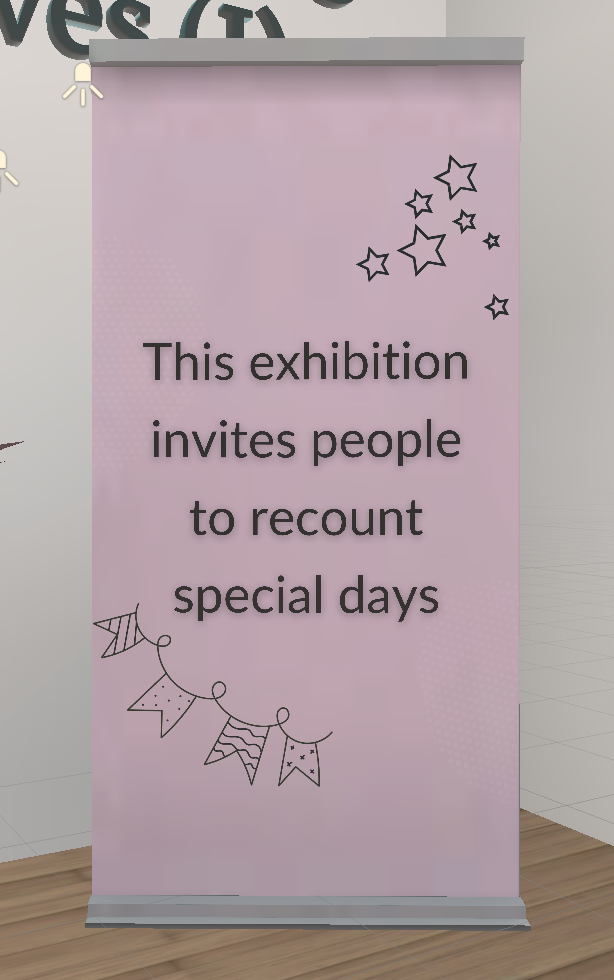
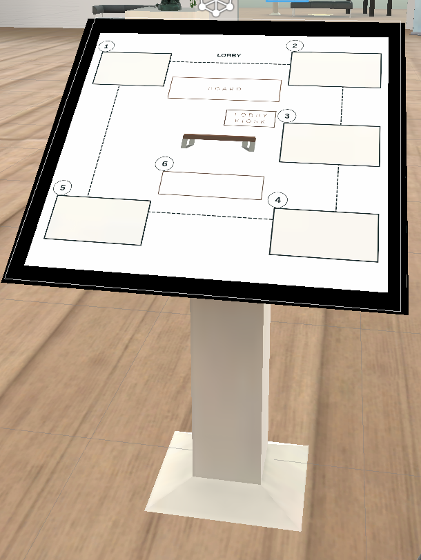
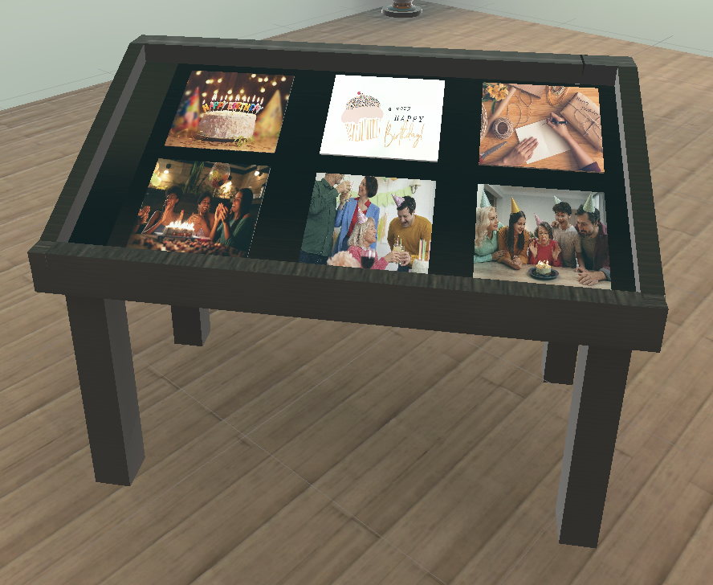

As part of JANUS Lab at Georgia Tech, I helped design a Virtual Museum
in Unity with SteamVR on HTC Vive Pro headset. This project aims to test episodic memory, the effects of virtual reality
on the psyche of people, and the ability of older adults to recall events from their life. This project is currently in development.
As part of the project, I worked closely with lab members on testing the VR environment, researched previous relevant studies
to create the study questionnaire (usability testing document) for the project.
VR Environment Design
Designed and modeled the architecture and layout of the virtual museum.
Researched user behavior and comfort in VR environments to optimize the layout of the space and adjust the
dimensions of the museum structure, sculptures, photos, and other relevant objects. This research was tailored
for both young and older adults to ensure usability and accessibility, such as offering a seated experience in
some areas and a standing experience in others.
Optimized lighting to create a visually appealing and comfortable VR space, ensuring assets were well-lit without overwhelming users. This included spotlights and directional lighting to similar to an in-person museum.
Incorporated dynamic lighting during drag-and-drop interactions, where photo frames light up to indicate the target frame for the photo.
Arranged 3D objects in the VR space such that aesthetics and realism were balanced, creating an immersive experience.

3D Asset Creation
Modeled 3D assets from scratch in Blender. Specific objects that I created are,
Museum structure and rooms with open window roof
Photo frames
Tilted table (in rooms for placing photos)
Standees (placed outside each room for descriptive room information)
Kiosks (for displaying museum map)



Interactive Features
Drag-and-drop functionality for photos, allowing users to move them from tables to photo frames using a laser pointer
Rearranging photos within frames
An instructional screen with clickable options and smooth fade-in/out text transitions
Navigation tools such as teleportation and interactive museum maps to enable users to explore the VR museum
A serial series of walkthrough that allows the participants to go through the museum incrementally, one by one as part of the study.
VR Navigation
Added teleportation and created a 3D museum map with interactive pop-ups and tooltips for enhanced user navigation within VR, including features,
Teleportation functionality so that the player can move to multiple locations in the VR space
Fade-to-black transitions for room-to-room teleportation, incorporating helpful on-screen text during transitions
A 3D museum map with pop-ups and descriptive tooltips for each room, providing detailed information and assisting
users with navigation (please note that the video below is from a prototype version, and is not the same as the
final version)